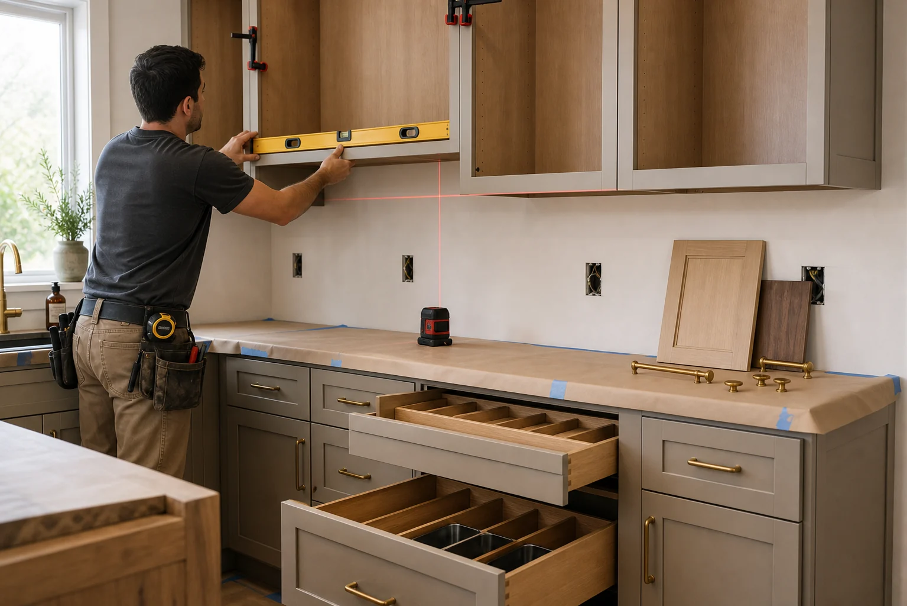

Cabinet Installation Help for Better Storage and Fit
Cabinets shape the kitchen's function, look, and budget. We help homeowners connect with independent providers who can discuss replacement, installation, panels, trim, hardware, and storage upgrades.
Cabinet Scope Notes
Cabinet work can range from a simple replacement to a more involved layout change with new electrical, surfaces, and finish carpentry.
- Measurement review, wall conditions, appliance clearances, and cabinet style goals.
- Base cabinets, wall cabinets, pantry units, drawer banks, islands, panels, and fillers.
- Soft-close hardware, pull-outs, trash centers, spice storage, tray dividers, and corner solutions.
- Crown, toe-kick, scribe molding, end panels, handles, knobs, and final alignment.
Measure Carefully
Ask how the provider handles field measurements, uneven walls, ceiling height, plumbing conflicts, and appliance specifications.
Confirm Materials
Clarify whether cabinets are stock, semi-custom, or custom-built, and ask about box construction, finish durability, and lead times.
Install Details
Discuss demolition, wall repair, cabinet anchoring, trim, countertop readiness, and cleanup before agreeing to the scope.
Describe Your Cabinet Goals
Tell us whether you need new cabinets, a better storage layout, an island, replacement doors, or finishing details. We will help route the request.
- Add photos of the current kitchen.
- Include rough measurements or room size.
- Share timing, budget range, and priorities.


Cabinets Need Measurement, Storage Logic, and Finish Coordination
Cabinet projects succeed when the provider understands both the physical room and how the homeowner wants to use the kitchen. Small decisions such as fillers, panels, and appliance clearances can affect the final look.
Prepare Before Contact
- Current cabinet photos with problem areas marked
- Appliance sizes and any planned replacements
- Storage wish list for drawers, pantry, and corners
- Preferred door style, finish color, and hardware type
Ask the Provider
- How field measurements are confirmed
- Whether walls or floors need correction first
- What cabinet type and construction are proposed
- How trim, fillers, panels, and toe-kicks are finished

Best for homeowners replacing boxes, adding an island, changing pantry storage, or improving drawer and cabinet organization.
Cabinet Work Needs Measurements, Storage Logic, and Finish Decisions
Cabinet installation is where design intentions become exact measurements. Wall conditions, appliance clearances, fillers, panels, trim, toe-kicks, and hardware all affect whether the kitchen feels intentional when the work is complete.
Room fit
Field measurements, ceiling height, uneven walls, window placement, and appliance specifications.
Storage plan
Drawer banks, tray dividers, trash pull-outs, spice storage, pantry units, and corner solutions.
Finish package
Door style, color, hardware, end panels, fillers, crown, light rail, and toe-kick details.
Install readiness
Old cabinet removal, wall repair, floor condition, countertop timing, and final alignment.
Before You Speak With a Provider
- Share appliance model numbers if they are already chosen.
- Photograph corners, soffits, plumbing walls, vents, and existing problem areas.
- Ask how the provider handles fillers, panels, scribe molding, and touch-ups.